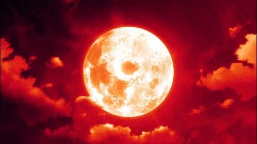
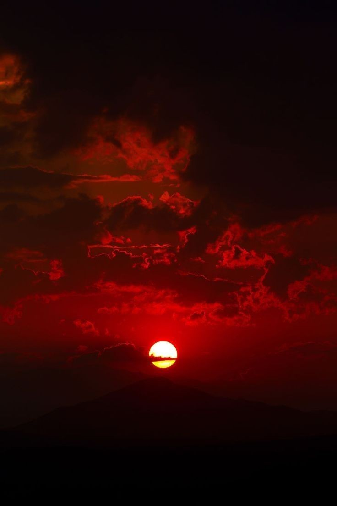
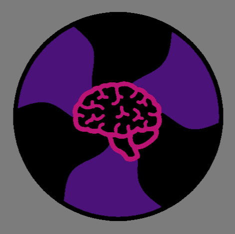

• Психотро́нное ору́жие - Собирательное название для совокупности оружия, которое способно менять сознание людей, а также приводить к мутациям организма и рассудка.
• Первое упоминание: 11.01.2022 год.
• ПДД - Паранормальная Дивизия Дурки; Помещение, специально оборудованное для ведения наблюдений и изучения аномалий в Дурке.
• Первое упоминание: 27.08.2020 год.
• Зомби́рователь - Специальный механизм; одна из форм психотронного оружия, созданная для зомбирования людей и искусственного принудительного изменения их сознания. Однако, в последствии, зомбирователь стал использоваться в медицине для лечения некоторых психических расстройств у людей.
• Первое упоминание: 28.05.2020 год.
• Га́рмы - Одна из единиц измерения количества излучения от психотронного оружия.
Обозначение: гм; gm
Минимальное значение, при котором человек остается более-менее в сознании = примерно 400 gm/мин = 22000 gm/час.
• Первое упоминание: 11.04.2022 год
Прибор для измерения количества излучения носит название “Счётчик Гарма”.
• Радио́ры - Единица измерения количества выбросов излучения от психотронного оружия.
Обозначение: рд; rd
• Первое упоминание: 13.04.2022 год
Прибор для фиксирования количества выбросов носит название “Радиоровая камера”.
• «Аномальные воро́нки» — Территории с повышенной аномальной активностью.
• Первое упоминание: 17 июля 2022 год.
• Не́жить — Воскрешенные, силами ПДА, люди. Схожи с зомбарями из фильмов, но гораздо умнее. Скорее, похожи на зомбированных из Сталкера.
• Кровавая Луна (КЛ) — Погодное событие, в следствие которого усиливаются паранормальные явления, появляется больше аномалий, разная нежить становится более активной.
Виновником Кровавой Луны могут быть как члены ПДА, проводящие опасные эксперименты, так и различные друиды, культисты, и пр. Однако, истинная природа данного явления пока неизвестна.


• «Пси-ожог» — Вид ожога, причиной которому является воздействие Психотронной установки (Зачастую, с Пси-излучением. Отсюда и название ожога).
Характерной чертой Пси-ожога является появление на месте гнойных пупырок, которые могут занести инфекцию в организм, если вовремя не оказать медицинскую помощь.
• «Шум в голове» — психически-аномальное состояние человека, при котором на некоторое время теряется возможность концентрации на одном деле, ввиду постоянно возникающих навязчивых мыслей и обдумывания разных событий, произошедших в ближайшее время (не путать с ОКР!).
Из-за обилия мыслей становится сложно остановиться на конкретной одной.
Выделяют 2 вида шума: белый и чёрный. Первый описан выше, а чёрный шум — это наоборот отсутствие вообще каких-либо мыслей, условная “пустота в голове” и состояние, когда тяжело создавать самостоятельно эти мысли.
Термин широко не распространен на данный момент.
• Дефектид — любой живой или неживой субъект/объект, обладающий аномальными и/или паранормальными способностями.
Краткая справка:
Аномальное — то, что связано с физическим телом и психологией (т.е. научная медицина). Отсюда: Аномальный дефектид.
Паранормальное — то, что связано с потусторонним миром мистики (т.е. парапсихология, алхимия и другое). Отсюда: Паранормальный дефектид.
• Метаморфиты — совокупность различных артефактов, появившихся в Новом Мире из-за воздействия психотронного излучения. Данные артефакты представляют собой какие-либо породы, камни, драгоценности (как правило — округлой, овальной или кристаллической формы), которые обладают аномальными свойствами.
Для обнаружения метаморфитов применяются специальные детекторы:
- «МОРФ-1» — стандартный незамысловатый детектор, позволяющий обнаружить метаморфиты НИЗКОЙ ценности. Представляет собой прибор чуть больше телефона, со специальным индикатором на панели, который светится при приближении к метаморфиту.
- «МОРФ-2» — стандартный детектор, является более улучшенной версией своего предшественника. Позволяет обнаруживать метаморфиты НИЗКОЙ и СРЕДНЕЙ ценности. Принцип работы такой же, как у предшественника.
- «ИРМА» (Индикатор Редкой Метаморфической Активности) — детектор, позволяющий находить метаморфиты СРЕДНЕЙ и ВЫСОКОЙ ценности. Имеется дисплей, на котором отображается конкретное местоположение метаморфита поблизости (принцип схож с эхолокацией).
- «ЯГНУС» — один из лучших детекторов, который позволяет находить метаморфиты только ВЫСОКОЙ ценности. Может быть затруднителен в использовании, но результат оправдает себя. Принцип работы схож с ИРМОЙ.
- «Универсаль» — самая лучшая и самая дорогая на данный момент версия детекторы. «Универсаль» даёт возможность обнаруживать 99% всех существующих метаморфитов НИЗКОЙ, СРЕДНЕЙ и ВЫСОКОЙ ценности. Большой радиус действия позволяет прочёсывать минимальное расстояние, с максимальным профитом.
• «Аттрактор» — местность с повышенной аномальной активностью.
• «Воид» (Пустота или Мертвая зона) — местность с минимальной аномальной/биологической активностью.
• «Слепая зона» (или «Слепое пятно») — неочевидная местность, скрытая за рамками человеческого восприятия (т.е. за «туннелем реальности»), внимание на которой не концентрируется в повседневной жизни.
• «Туннель реальности» — означает очень ограниченный набор результатов поведения и восприятия, которые формируются свойствами вашей личности и историей ваших взаимодействий с реальностью. Это что-то вроде фильтрующего пузыря вокруг, когда детерминистическая составляющая вашего поведения делает места, вещи и информацию, которые существуют вне такого «туннеля», практически невидимыми для вас, поскольку вам просто не приходит в голову подумать об этом.
Это означает, что независимо от того, какой выбор вы делаете, и независимо от того, сколько вариантов вашего дня может произойти, всегда есть места, где вы просто не можете быть, потому, что ни одна из цепочек ваших решений туда не ведет. Такие места могут быть где-то рядом. Например, на вашей улице может быть переулок, в который вы никогда не подумаете посмотреть и даже не знаете о его существовании. Именно такие местности и называются «Слепыми зонами».
• Сканер Аномальной и Паранормальной Активности «Весть» (САПА «Весть») — стандартный прибор, повсеместно используемый службой ПДА в Абсурдистане для обнаружения точек повышенной аномальной и паранормальной активности. Прибор ещё находится в стадии разработки и тестирования, поэтому ПДА используют лишь первый прототип «Весть-1».
Принцип действия сканера схож с работой детекторов метаморфитов: При приближении к точке с повышенной аномальной/паранормальной активности — на дисплее загорается шкала-индикатор.
«Весть» различает несколько уровней активности:
В (0) — Воид, т.е. нулевая активность. Синий цвет индикатора;
1А — Аттрактор, т.е. низкая активность. Зелёный цвет индикатора;
2А — Повышенная активность. Желтый цвет индикатора;
3А — Сильная активность. Оранжевый цвет индикатора;
4А — Сверхсильная активность. Красный цвет индикатора.
Стоит подметить, что «Весть» не способен указывать конкретную аномалию/паранормалию. Он лишь указывает на её присутствие или отсутствие.
И к тому же, далеко не все аномальные/паранормальные явления различимы данным сканером.
• Пси-излучение (психотронное излучение) — излучение, по принципу действия схожее с радиацией. Некоторые предметы, подвергшиеся пси-облучению, могут накопить его в себе на длительное время.
Оно негативно влияет на живые организмы, вызывает снижение рассудка и другие проблемы с организмом.
Для обнаружения пси-излучения используют ДПИ (Детектор Пси-Излучения).
Для защиты от психотронного воздействия используют защитные костюмы, именуемые УЗКами (Ультимативными Защитными Костюмами).
Существует три класса таких костюмов:
УЗК-А — для защиты от легкого психотронного воздействия.
УЗК-Б (латиница: А+ или B)— для защиты от умеренного психотронного воздействия.
УЗК-В (латиница: С)— для защиты от сильного психотронного воздействия.
• Символ психотронного излучения/символ психотронной опасности/символ опасности психотронного излучения (ОПИ) и тд. — символ, которым маркируются зоны и объекты, подверженные психотронному излучению или места с большой плотностью психотронного излучения.
Символ ОПИ впервые использовало правительство Матринеса для маркировки заброшенных после ВВТ объектов, облученных психотронным оружием.
Сейчас этот символ признан и используется многими странами.
Символ ОПИ выглядит как окружность черного цвета, в центре которой малиновым/розовым цветом изображён мозг человека, от которого фиолетовым цветом отходят толстые кривые линии, символизирующие как раз психотронное излучение.
Мозг, как символ, был выбран тоже не просто так. Ведь именно разум в первую очередь поражается психотронными лучами и частицами.

• «ЖДВ» («Жизни Дефектидов важны») — Матринесовское движение, направленное на уравнение в правах Аномалий/Дефектидов с людьми. Кроме того, активисты требуют отказаться от наименования «Аномалия» и «Дефектид», а вместо них ввести новые: «Альтернатив» или «Альтернативно живой».
• ВОИД (Всемирная Организация Изучения Дефектидов) — одна из ведущих мировых организаций, занимающаяся изучением аномальной и паранормальной активности во всех её проявлениях. Два главных офиса находятся в Матринесе и Тутраксе.
• Организация Защиты Прав и Свобод Психотронников (ОЗПСП) и Организация Защиты Парафизических Объектов (ОЗПО) — две лидирующие организации Нового Мира, специализирующиеся, как понятно из названий, на защите прав и свобод психотронников и на защите парафизических объектов от техногенного вмешательства.
Если ВОИД (признанная Всемирная Организация Изучения Дефектидов) рассматривает все аномальные/паранормальные субъекты как дефектидов, то ОЗПСП (признана не всеми странами) разделяет таких субъектов на:

- дефектидов в классическом понимании;
- психотронников — лиц, подвергшихся влиянию психотронного излучения, но не утративших человеческое сознание.
Последние рассматриваются скорее как пациенты, нежели как арестанты для принудительного сдерживания и опытов.
ОЗПСП пытаются добиться того, чтобы другие организации, занимающиеся изучением свойств аномалий/паранормалий не пренебрегали правом на их свободу и не нарушали другие их права, достигая научных исследований и открытий гуманными и взаимовыгодными методами.
ОЗПО (тоже признана не всеми странами) действует как подразделение ОЗПСП. ОЗПО фокусируется на защите неживых парафизических объектов (например: аномальных воронок), а также альтернативно живых субъектах (в понимании ОЗПО: альтернативно живые — лица, подвергшиеся влиянию психотронного излучения и утратившие человеческое сознания и/или общие признаки, присущие людям как биологическому виду).
Выступают за рациональное использование источников парафизической активности и за рациональное, безопасное использование дефектидов (альтернативно живых) в практических научных целях.
Не путать движение ЖДВ и организации ОЗПСП и ОЗПО. Несмотря на то, что в народе бытуют конспирологические теории о финансировании движения «Жизни Дефектидов Важны» организациями ОЗПСП и ОЗПО, подлинность таких теорий остаётся недоказанной.
Примеры 12ти опасностей по Гроннолю для чайников (на примере одного яблока).
- Психотронное нарушение физических законов по Ньютону.
Пример: Яблоко падает, отталкивается и продолжает полёт без какого-либо торможения. - Психотронное нарушение физических законов по Эйнштейну.
Пример: Двигаясь рядом с яблоком Вы ощущаете замедление времени. - Опасность вторжения в биополе.
Пример: Вы облучены. Находясь рядом с яблоком Вы заставляете его гнить быстрее. - Опасность нетипичного поведения частиц.
Пример: Электроны вытекают сквозь кожуру яблока, делая плод неосязаемым. - Искажение массы/Безмассовость.
Пример: Яблоко больше не имеет массы. - Опасность разрушения плоти.
Пример: Вы дотрагиваетесь до яблока. Ваша плоть “расплавляется”, будто пальцы были помещены в кислоту. - Искажение восприятия пространства.
Пример: Вы смотрите на яблоко. Яблоко везде, Вы не можете точно указать, где оно в данный момент. (Яблоко всегда лежало на одном месте). - Опасность контроля разума.
Пример: Яблоко живое. Оно внушает Вам сделать что-то плохое с собой. Вы поддаётесь этому. - Опасность мыслепреступления.
Пример: Яблоко живое. Оно внушает Вам надеть джинсы. Вы ненавидите джинсы, но надеваете их. - Опасность нарушения перцепции.
Пример: На столе лежит одно яблоко. Вы смотрите на него и видите два яблока. - Психологическая опасность.
Пример: Вместо яблока Вы видите сцену с травмирующим опытом. Вы чувствуете изменения в сознании. Вы испытываете отвращение к себе. Вы хотите сделать с собой что-то плохое. - Психотронное изменение пространства.
Пример: Вы смотрите на яблоко. Комната постепенно сжимается.
Психотронни́ческий эпизод — единичное или кратковременное проявление свойств и способностей, вызванных слабым психотронным облучением. Как правило, психотроннические эпизоды не несут большой опасности и проходят сами собой без специального лечения, в отличие от мутаций и других серьёзных пагубных последствий. Рецидивы имеют место быть, но в отдельных случаях при определённых обстоятельствах.
• Нетленные — категория паранормалий (паранормальных сущностей/явлений). В отличие от обычных паранормалий, которые влияют на всех существ в области досягаемости и в общем случае считаются условно живыми, нетленные “показывают” себя только определённым людям/живым существам, из-за чего их классифицируют как промежуточное явление между паранормальным, реальным и галлюцинаторным. Исследования не до конца выявили принципы, по которым одни видят эти необычные “галлюцинации”, а другие нет, но чаще всего на возможность увидеть нетленного влияют:
— степень облучения и подверженность психотронному оружию (психотронное излучение может по разному влиять на индивидов; некоторые люди легче переносят облучение, другие же начинают проявлять способности и психотронные заболевания уже при малых дозах облучения);
— психологические травмы и заболевания (лица с шизофренией, закономерно, чаще могут столкнуться с нетленными; наличие в роду лиц с подобными заболеваниями, даже если у конечного индивида нет проявлений болезни, — тоже влияет на шанс увидеть нетленного: облучение может стать катализатором, который раскроет болезнь и вместе с тем позволит видеть нетленных);
— вера, мироощущение и убеждения (у особо религиозных людей чаще встречаются нетленные на почве веры/эзотерики/мифологии — демоны, домовые и пр.).
Стоит понимать, что нетленные — результат психотронной активности, а не обычные галлюцинации, которые являются симптомом психического расстройства. Несмотря на общие черты, которые есть у этих двух категорий. Однако, оттого становится тяжело корректно определить: это область психического здоровья или область влияния психотронного излучения. Обнаружено лишь, что обе эти области чаще всего находятся в симбиозе друг с другом.
Б И О П О Л И С Т И К А.
• Предполагается, что биополе — это свойство всех живых организмов, которое отражает способ влияния, характер влияния и степень влияния на другие разумные живые организмы.
Говоря простым языком, это незримая “оболочка” вокруг существа, которая может вступать во взаимодействие с другими подобными оболочками (или, в некоторых случаях, с неодушевлёнными объектами).
На биополе напрямую влияют эмоции конкретного существа и его ментальное состояние в целом. Психотронное излучение, как показывает практика, может подвергать биополя сильным метаморфозам и искажениям.
Выделяют:
- биополя «дарительного типа» — когда попадание в данное биополе заставляет существо перенять на себя эмоции, ощущения, эффекты этого поля. Самый простой, очевидный и не аномальный пример — харизматичный человек с хорошим настроением, рядом с которым ощущается позитив и радость;
- биополя «забирательного типа», т.н. “энергетические вампиры”, взаимодействие с которыми влечет за собой усталость и стресс.
Обычно принято считать, что биополе исходит от сознания (мозга) существа, но при аномальных проявлениях источник поля смещается (но, не всегда). Это объясняет, почему некоторые аномальные эффекты проявляются только при зрительном контакте, а некоторые только при непосредственной близости.
Впрочем, корректно измерить радиус биополя так и не получилось или вовсе не представляется возможным. Но, исследования в этом направлении до сих пор ведутся учёными-биополистами.
Биополистика — паранаука, фокусирующаяся на изучении биополей живых организмов.
Биополе и неодушевлённые объекты.
Обычно при взаимодействии существа (его биополя) с неодушевлённым объектом, без прямого физического контакта, принято говорить про телекинез и подобные этому способности, которые до сих пор являются источниками многочисленных споров и исследований.
Биополе и паранормалии.
Доподлинно неизвестно, можно ли говорить о паранормальных субъектах (не путать с аномальными) как о разумных созданиях с собственным сознанием. Однако, всё больше учёных сходятся во мнении, что паранормальные сущности обладают собственным независимым сознанием, в отличие от простых галлюцинаций, которые зависят от субъективного восприятия конкретного человека или группы людей.
Стало быть, если принять как факт, что у паранормалий есть сознание, то и наличие биополя должно быть неоспоримо. Тем не менее, для избежания путаницы, биополе паранормального существа называют «параполем».
Из-за надобности в изучении нетипичных биополей, одной из веток биополистики стала «полистика» или «теоретическая полистика», которую до сих пор кто-то пытается возвести в отдельную дисциплину, а кто-то приписывает её как подраздел парапсихологии и парафизики (не путать с патафизикой и метафизикой).
• Психотронник (или Психотронника) — в зависимости от значения:
- как наука: Психотронника — наука о психотронном оружии;
- как сущность: Психотронник — аномалия, дефектид, т.е. облученное психотронным излучением существо;
- как оружие: Психотронник — сленговое название для психотронного оружия.
Чаще всего применяется в первом значении.
• Шкала оценки психотронной активности в мире (Шкала оценки мировой психотронной опасности — МПО) — шкала, представленная Международной Службой Ликвидации Психотронной Опасности (МСЛПО) для оценки того, какой уровень опасности психотронного излучения на данный момент в мире.
Шкала оценки МПО:
0 — ощутимое психотронное влияние ликвидировано или локализовано.
1 — присутствует лёгкое психотронное влияние.
2 — слабое психотронное влияние.
3 — умеренное психотронное возмущение.
4 — сильное психотронное возмущение.
5 — психотронная опасность.
6 — психотронная катастрофа.
7 — критическое несдерживаемое психотронное влияние.
По оценке МСЛПО, в момент начала ВВТ — уровень МПО достиг своего апогея в 7 баллов. После, начал медленно снижаться до 6, затем 5ти баллов. В конечном итоге, уровень МПО удалось снизить до 3х баллов. Однако из-за применения психотронного оружия во время Гражданской войны в НРА, уровень МПО начал вновь возрастать. Что и происходит по сей день.